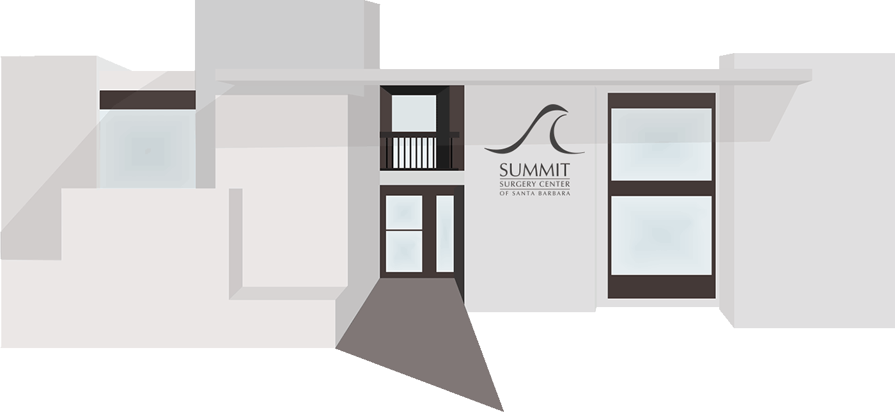

Specialties
We specialize in:
- Orthopedics
- Pain Management
- Podiatry
- Sports Medicine
Many of our Surgeons specialize in sports medicine, as well as as other disorders of the musculoskeletal system.
Our Orthopedic Surgeons treat acute, chronic, traumatic and recurrent injuries. Our Podiatrists treat and perform surgery of the foot and ankle, including Achilles tendon, heel and ankle injuries, bunionectomies (removal of painful bunions), and correction of hammertoes. Our Pain Management specialists focus on physiatry medicine, they are dedicated to the treatment and evaluation of acute and chronic pain with minimally invasive techniques.
